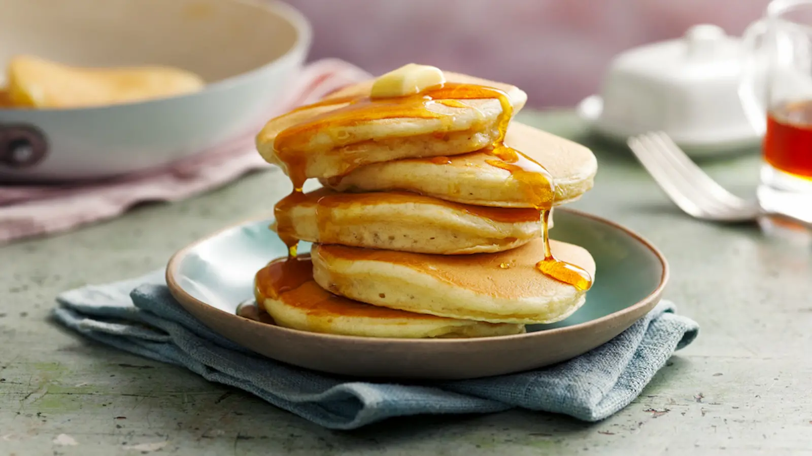

Pancake

These golden, fluffy pancakes are light, sweet, and come together in just a few minutes using basic pantry staples. They make a perfect weekend breakfast.
Ingredients
- 1 cup all-purpose flour
- 2 tsp white sugar
- 1 tsp baking powder
- ½ tsp salt
- 1 cup milk (dairy or plant-based)
- 1 large egg
- 2 tbsp melted butter (plus extra for the pan)
- 1 tsp vanilla extract
Steps
Recipe video
- Mix dry ingredients: In a large bowl, whisk together the flour, sugar, baking powder, and salt
- Mix wet ingredients: In a separate jug, beat the egg, then stir in the milk, melted butter, and vanilla extract
- Combine: Pour the wet mixture into the dry mixture and stir gently with a fork or whisk until just combined (a few small lumps are okay).
- Heat the pan: Place a non-stick skillet or griddle over medium heat and melt a small pat of butter.
- Cook: Pour about ¼ cup of batter for each pancake. Cook until bubbles form on the surface and the edges look set (about 2–3 minutes).
- Flip and finish: Flip carefully and cook for another 1–2 minutes until golden brown on the bottom. Serve warm with syrup or fresh fruit.
Email to Shop
About